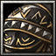

- 主要屬性 力量
攻擊範圍 128
- 基礎護甲 5
基礎攻速 1.6
- 基礎攻擊 115 - 133
基礎跑速 315
德川家臣 德川四天王之一，是個出色的武士。世稱〝戰國第一猛將〞，據說他在57次的合戰中，也未曾受到一點損傷。他的事蹟除了金崎撤退，也曾經在家康被信玄引誘而出的三方原擔任殿軍，以及本能寺之變後家康穿越伊賀時，一直在主軍家康身邊盡守忠義。在小牧長 久手合戰中，他僅以忠勝軍和秀吉本軍激戰，充分發揮出他的武勇。信玄與秀吉等等的敵將，都給予「華實兼備的猛將」、「古今獨步的勇士」、「效忠家康太可惜了」的高度評價。
-
-
D
奮起
-
50/50/50/50/50
-
9/8/7/6/5
使自身回復4%生命值並且提升攻速60%，持續3秒。
天生主動技能，冷卻時間隨技能等級提升降低，提升「碎擊槍」等級可強化此技能
-

-
W
毫髮無傷
-
75/105/135/165
-
17
施展後能無視所有物理傷害，並且可以吸收法術傷害轉化為自身的生命值。持續(1/2/3/4)秒。
-
-
E
赤雷擊
-
75/90/105/120
-
15/13/11/9
使用手上的巨槍猛力槍擊地面，對周圍的敵人造成(150/250/350/450)傷害，並且使他們減緩75%移動速度，持續(1.0/1.7/2.4/3.1)秒。
冷卻時間隨技能等級提升降低
每當擊中敵人時，可以連帶的對範圍(245/285/325/365)的其他敵人造成等同攻擊傷害40%的傷害。
學習此技能可以強化「奮起」
-
-
T
戰國最強．啟動
-
150/150/150
-
120/110/100
擁有戰國最強的力量，基礎攻速由1.6變為0.8，增加60攻擊傷害以及200移動速度，並且魔法免疫，"奮起"的效果變為雙倍。可持續(14.5/19.5/24.5)秒。
學習等級為6/12/18，冷卻時間隨技能等級提升降低
永久性的提升(3/6/9/12)靈活、智慧和力量。